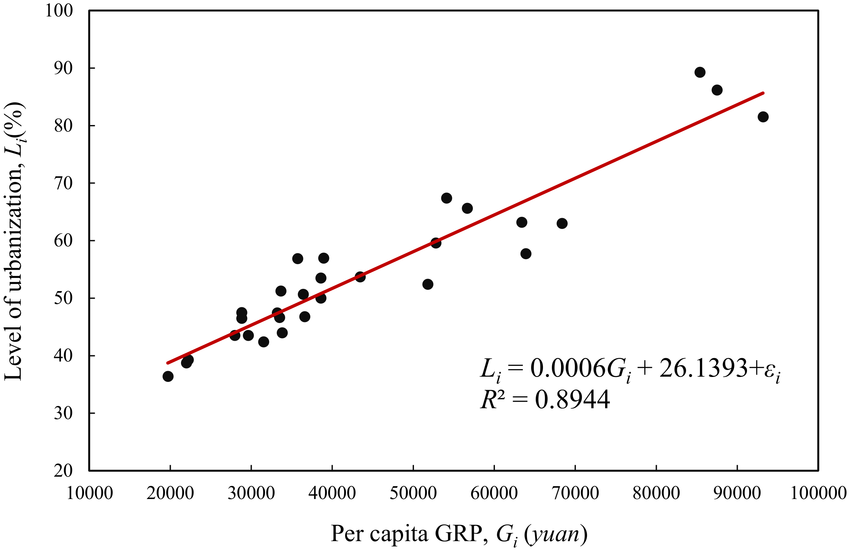
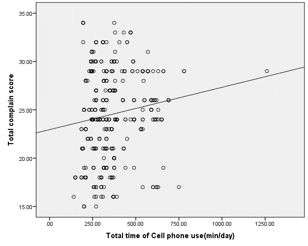

Week 8
Ordinary Least Square Regression
UC Berkeley, School of Information
Introduction to Regression



The Regression Algorithm
Idea: Draw a line given a sample of data
standout
What does this line mean ?
Under what assumptions?
The Mechanics of OLS Regression
- The OLS algorithm
- Statistical assumptions
- Statistical guarantees
Unit Plan
Goals of This Week
At the end of this week, you will:
- Understand that regression is the plug-in estimator of the best linear predictor (BLP).
- Understand overall model fit and use an F-test to assess whether a candidate model is performing better than a baseline model.
- Understand how to appropriately interpret regression coefficients.
- Lay a foundation for careful interpretation.
Reading: The Golem of Prague
Reading: The Golem of Prague
This is a placeholder for a reading call. We’re just placing it here for organization. - Read Sections 1.0 and 1.1 of Statistical Rethinking , which we have provided a copy of in PDF form from the publisher. - Statistical Rethinking is a great book and reference that you should consider later in your data science and statistics path.
Regression, a Statistical Golem
Regression, a Statistical Golem
- Regression—like all models—is a tool.
- We put tools to use toward a data scientific purpose; however, tools are only tools.
- Use of a straight-edge, scale, and T-square doesn’t make one an architect any more than use of { } or { } makes one a data scientist.
The Machinery of OLS Regression
- OLS regression is a plug-in estimator for the best linear predictor (BLP).
- The BLP is the lowest mean squared error (MSE) estimator, out of all linear functions.
Applications of OLS Regression
Regression is fantastically versatile - Under some circumstances, regression has explainable internal weights (coefficients) that are of interest. - Under other circumstances, regression identifies causal effects. - Under many circumstances, regression is the de facto baseline estimator.
Elements of a Linear Model
Elements in a Linear Model
Linear model A.K.A. linear predictor
A __linear model__ is a representation of a random variable
($Y$) as a linear function of other random variables
$\bs X = (X_1,X_2,...,X_k)$.The Linear Model Formula
The linear model formula
\[\begin{align*} \hat{Y} &= g(X_1,X_2,...,X_k)\\ &=\beta_0 + \beta_1 X_1 + \beta_2 X_2 + ... + \beta_k X_k \end{align*}\]
A Linear Model Example
Brunch in Berkeley
[ = 2 + 1 + 2 ]
Review: Outcome, Prediction, and Error
Review: Outcome, Prediction, and Error

Concept Check: Making Predictions with a Linear Model
Concept Check: Making Predictions with a Linear Model
- Students will be given a model and (x,y) and compute prediction and error.
Metric Inputs
Interpreting Model Weights (Coefficients)
[ =_0 + _1 X_1 + _2 X_2 + … + _k X_k ]
Interpretation of coefficients
- If \(X_{i}\) changes by \(\Delta X_{i}\) units, the predicted value of the target, \(\hat{Y}\) changes by \(\beta_{i} \cdot \Delta X_{i}\) units.
- If \(X_{i}\) and \(X_{j}\) change by \(\Delta X_{i}\) and \(\Delta X_{j}\) respectively, then the predicted value of the target, \(\hat{Y}\) changes by \((\beta_{i} \Delta X_{i}) + (\beta_{j} \Delta X_{j})\) . Ceteris paribus: all else equal
Interpreting Model Coefficients: Example
Does this model say peacocks with longer tails fly slower?
[ = 4.3 - 1.2 + 0.8 ]
Categorical Inputs
Categorial Inputs, Part I
What if, rather than numeric inputs, we had categorical inputs?
- Information that says it belongs to one category or another, but doesn’t provide a value to that category?
- Reminder : There are four ``levels’’ of information – (1) Categorical; (2) Ordinal; (3) Interval; (4) Ratio
Categorical Inputs, Part II
How is this represented in a model?
- The model aims only to distinguish one category from another, and so switches from stacked labels to one-hot encoded , or dummy variables.
- Practically, in this model, one of the labels is identified as the baseline , default , or omitted category
- Indicators for alternate levels mark changes from the baseline to the alternate level.
Categorical Inputs, Part II
Learnosity: Interpreting Model Weights
This is a placeholder for a Learnosity activity. - have to change this, so it’s about interpretation, not prediction - In this activity, students will be given a fitted model that conforms with the data that they have for the peacock - They will make predictions first from the data, and then - Second, from newly created data to see how the predictions change
Part 2: Selecting a Linear Model with OLS
OLS is Regression for Estimating the BLP
Fitting Linear Models
Linear regression: an algorithm for fitting a linear model given a sample of data
- Ordinary least squares (OLS) regression
- Quantile regression
- Regularized regression - Lasso
- Ridge regression
Understanding OLS
Ordinary least squares (OLS) regression
- The most well-known type of linear regression
- A foundation for many other types of regression
- Key goal: estimating the best linear predictor (BLP)
The BLP Minimizes Expected Squared Error

The Best Linear Predictor
The BLP (population regression function)
The best linear predictor is defined by the function
\[g(\mathbf{X}) = \beta_{0} + \beta_{1}X_{1} + \beta_{2} X_{2} +
\dots + \beta_{k}X_{k}\]
where $\boldsymbol{\beta} = (\beta_0, \beta_1,...,\beta_k)$ are
chosen to minimize the expected squared error.
\[
\min_{(b_{0}, \dots, b_{k})}
\E\big[ (Y - (b_0 + b_1 X_1 + ... +b_k X_k))^2\big]
\]Great Things About the BLP
The best linear predictor…
- minimizes MSE out of all linear models.
- captures an infinitely complex distribution in a few parameters.
- can be estimated with much less data compared to a probability density.
- is easy to reason about.
- is easy to communicate to others, helping knowledge advance.
- has a closed form solution that is relatively easy to work with.
Applying the Plug-In Principle

OLS Regression Is the BLP Plug-In Estimator
Plug-in strategy
The OLS regression line is given by
\[
\hat{g}(\mathbf{X}) = \hat{\beta}_{0} + \hat{\beta}_{1}X_{1} + \hat{\beta}_{2}X_{2} +
\dots + \hat{\beta}_{k}X_{k}
\]
where $\boldsymbol{\hat \beta} = (\hat \beta_0,\hat \beta_1,...,\hat \beta_k)$ are given by
\[
\min_{(b_{0}, \dots, b_{k})} \frac{1}{n} \sum_{i=1}^n \big(Y_i
- (b_0 + b_1 X_{[1]i} + ... + b_k X_{[k]i}) \big)^2.
\]An Analogy with the Mean
Coming Up Soon…
We still have to:
- solve the minimization problem
- show that OLS is consistent for the BLP
Learnosity: You Minimize It!
Learnosity: You Minimize It!
Note: This is a Learnosity Activity. We’re just placing it here for organization.
This is the activity that is currently coded .
Note that we would like to expand this to ask students to work through several examples in a row. Presently we have a single example made; expanding this to a broader set is relatively easy. In the expanded set, we should ensure that we have some complexity in the data—e.g., a sine curve.
Reading: OLS Regression Estimates the BLP
Reading: Linear Regression is a Plug-in Estimator for the BLP
Note: this is a reading call, we’re just placing it here for organization.
Read pages 143–147 of Foundations of Agnostic Statistics.
Choosing Assumptions for OLS Regression
When Does OLS “Work”?
The OLS regression line is
[ () = {0} + {1}X_{1} + {2}X{2} + + {k}X{k} ]
where \(\boldsymbol{\hat{\beta}}\) are chosen to minimize squared residuals.
Different assumptions
\(\Downarrow\)
Different statistical guarantees
standout - More data \(\implies\) less restrictive assumptions - More data \(\implies\) easier to assess assumptions
OLS in a Large Sample
The large-sample model (not an official name)
Just two assumptions:
- I.I.D.- Unique BLP exists
Asymptotic behavior as \(n\to\infty\) provides considerable guarantees.
OLS in a Small Sample
The classical linear model
- A parametric model—fully specifies \(f_{Y|X}\)
- Traditional starting point for regression
- Even with extensive transformations, may be hard to justify assumptions
Guarantees come from strict assumptions.
OLS in Very Small Samples
Special difficulties when \(n < \sim15\) - No help from asymptotics - Not enough data to assess CLM
Randomization inference
- A framework for testing (restrictive) null hypotheses
Rules of Thumb for OLS Assumptions
Rules of thumb
In general, you might reason about data and regression models in the following way.
The Bivariate OLS Solution
Existing Content (in distinct format)
9.5 Deriving the Bivariate OLS Estimators
Consistency of Bivariate OLS Under the Large-Sample Model
Continuous mapping theorem: Let \((S^{(1)}, S^{(2)},S^{(3)},...)\) and \((T^{(1)}, T^{(2)},T^{(3)},...)\) be sequences of random variables. Let \(g: \R^2 \rightarrow \R\) be a function that is continuous at \((a,b) \in \R^2\) . If \(S^{(n)} \overset{p}{\to} a\) and \(T^{(n)} \overset{p}{\to} b\) , then \(g(S^{(n)} ,T^{(n)}) \overset{p}{\to} g(a,b)\)
Assumptions: 1) I.I.D. 2) Unique BLP exists ( \(\V(X) > 0\) )
Continuous mapping theorem: Let \((S^{(1)}, S^{(2)},S^{(3)},...)\) and \((T^{(1)}, T^{(2)},T^{(3)},...)\) be sequences of random variables. Let \(g: \R^2 \rightarrow \R\) be a function that is continuous at \((a,b) \in \R^2\) . If \(S^{(n)} \overset{p}{\to} a\) and \(T^{(n)} \overset{p}{\to} b\) , then \(g(S^{(n)} ,T^{(n)}) \overset{p}{\to} g(a,b)\)
Assumptions: 1) I.I.D. 2) Unique BLP exists ( \(\V(X) > 0\) )
\[\begin{align*} \quad x^{(n)} &= (x_1,x_2,...,x_n) \quad y^{(n)} = (y_1,y_2,...,y_n)\\ S^{(n)} &= \widehat{\cov}(x^{(n)}, y^{(n) }) \quad T^{(n)} = \widehat{\V}(x^{(n)})\\ \hat \beta^{(n)}_1 &= S^{(n)} / T^{(n)}\\ S^{(n)} & \overset{p}{\to} \cov[X,Y], \qquad T^{(n)} \overset{p}{\to} \V[X]\\ g(c,d) &= c/d\text{ is continuous where } d \neq 0 \\ \hat \beta^{(n)}_1 &= g( S^{(n)}, T^{(n)}) \overset{p}{\to} g( \cov[X,Y], \V[X,Y] ) = \beta_1 \end{align*}\]
The Matrix Formulation of a Linear Model
The Matrix Formulation of a Linear Model
- Insert content from previous version of course: 10.7 Matrix Form of the Linear Model
- This content leads into the next lightboard of the derivation of the OLS normal equations
Reading: The Matrix Solution For OLS Regression
Reading: The Matrix Solution For OLS Regression
Read section 4.1.3, which is on pages 147 - 151.
The Multiple OLS Solution
The Multiple OLS Solution
- Pull in the lightboard called Matrix Derivation of the OLS Estimator .
- In the next iteration of the course, pull in a geometric derivation of the OLS coefficients.
Sample Moment Conditions
Review: Population Moment Conditions
Population: Let \(\epsilon\) represent error from the BLP.
Version 1: \(\E[\epsilon]=0, \E[X_j \epsilon] = 0\) for all \(j\) .
Version 2: \(\E[\epsilon]=0, \cov[X_j,\epsilon]=0\) for all \(j\) .
Sample Moment Conditions
Sample: Let \(\bs e = \left[ \begin{matrix} e_1 \\ \vdots \\ e_n \end{matrix} \right]\) represent OLS residuals.
Sample Moment Conditions
Sample: Let \(\bs e = \left[ \begin{matrix} e_1 \\ \vdots \\ e_n \end{matrix} \right]\) represent OLS residuals.
\(\X^T \bs Y = \X^T \X \bs \beta\) , \(\qquad 0 = \X^T ( \bs Y - \X \bs \beta) = \X^T \bs e\) \(\left[ \begin{matrix} 1 & 1 & \hdots & 1 \\ X_{[1]1} & X_{[1]2} & \hdots & X_{[1]n} \\ \vdots & \vdots & \ddots & \vdots \\ X_{[k]1} & X_{[k]2} & \hdots & X_{[k]n} \\ \end{matrix} \right]. \left[ \begin{matrix} e_1 \\ e_2 \\ \vdots \\ e_n \end{matrix} \right]\) \(\sum e_i = 0\) , \(\sum X_{[j]i} e_i = 0\) . or \(\widehat{\cov}(\bs X_{[j]}, \bs e) = 0\)
Consistency of Multiple OLS
Consistency of Multiple OLS
Assumptions: 1) I.I.D. 2) Unique BLP exists
\(\text{In population: } \boldsymbol{ \beta } = \E[ X^TX]^{-1} \E[X^TY]\)
Consistency of Multiple OLS
Assumptions: 1) I.I.D. 2) Unique BLP exists
\[\begin{align*} \text{In population: } \boldsymbol{ \beta } &= \E[ X^TX]^{-1} \E[X^TY] \end{align*}\] \[\begin{align*} \boldsymbol{ \hat \beta }^{(n)} &= (\frac{1}{n} \X^{(n)T} \X^{(n)})^{-1} \frac{1}{n} \X^{(n)T} \boldsymbol{Y^{(n)}} \\ \frac{1}{n} \X^{(n)T} \boldsymbol{Y^{(n)}} &= \frac{1}{n} \left[ \begin{array}{cccc} \vertbar & \vertbar & & \vertbar \\ x_{1} & x_{2} & \ldots & x_{n} \\ \vertbar & \vertbar & & \vertbar \end{array} \right] \left[ \begin{array}{c} y_1 \\ y_2 \\ \vdots \\ y_n \end{array} \right] =\frac{1}{n} \sum_{i=1}^n x_i^T y_i \\ \frac{1}{n} \X^T\X &= \frac{1}{n} \left[ \begin{array}{cccc} \vertbar & \vertbar & & \vertbar \\ x_{1} & x_{2} & \ldots & x_{n} \\ \vertbar & \vertbar & & \vertbar \end{array} \right] \left[ \begin{array}{ccc} \horzbar & x_{1} & \horzbar \\ \horzbar & x_{2} & \horzbar \\ & \vdots & \\ \horzbar & x_{n} & \horzbar \end{array} \right] = \frac{1}{n} \sum_{i=1}^n x_i^T x_i \end{align*}\]
Consistency of OLS
\[\begin{align*} \text{WLLN} &\implies \frac{1}{n} \sum_{i=1}^n x_i^T x_i \overset{p}{\to} \E[X^TX] \qquad \frac{1}{n} \sum x_i^T y_i \overset{p}{\to} \E[X^T Y] \\ \text{CMT} &\implies \boldsymbol{ \hat \beta } = \beta + (\frac{1}{n} \sum_{i=1}^n x_i^T x_i) ^{-1} (\frac{1}{n} \X^T \epsilon) \overset{p}{\to} \beta + 0 = \beta \\ \end{align*}\]
Unique Variation and Regression Anatomy
How Can We Understand a Specific \(\hat \beta_i\)?
[ = (T){-1}^TY ]
Partialling Out
\(\hat Y = \hat \beta_0 + \hat \beta_1 X_1 + \hat \beta_2 X_2 + ... + \hat \beta_k X_k\)
Step 1: Regress \(X_1\) on other \(X\) s
\(\hat X_1 = \hat \delta_0 + \hat \delta_2 X_2 + ... + \hat \delta_k X_k + r_1\)
Step 2: Regress \(Y\) on the residuals from Step 1
\(\hat Y = \hat \gamma_0 + \hat \beta_1 r_1\)
Regression anatomy: \(\hat \beta_1 = \frac{\widehat{ \cov} ( \boldsymbol{Y}, \boldsymbol{r_1})}{\widehat{\V}(\boldsymbol{r_1})}\)
Deriving the Regression Anatomy Formula
Deriving the Regression Anatomy Formula
Use content from old course:
10.5 Regression Anatomy
Segment for Consideration: Applying the Regression Anatomy Formula
Applying the Regression Anatomy Formula
Consider using the old concept check: 10.6 Applying the Regression Anatomy Formula
Interpreting Model Coefficients: Warnings
\(\widehat{Wage} = \beta_0 + \beta_1 Age + \beta_2 Birth\_Year\)
What does it mean to hold Age constant while increasing Birth_Year ?
Evaluating the Large-Sample Linear Model
The Large-Sample Linear Model
- I.I.D. data
- A unique BLP exists
What Does I.I.D. Mean?
Imagine selecting each new datapoint…
- from the same distribution
- with no memory of any past datapoints
Common Violations of Independence
- Clustering - Geographic areas
- School cohorts
- Families
- Strategic Interaction - Competition among sellers
- Imitation of species
- Autocorrelation - One time period may affect the next How can observing one unit provide information about some other unit?
A Unique BLP Exists
A BLP exists:
- \(\cov[X_i,X_j]\) and \(\cov[X_i,Y]\) are finite (no heavy tails)
The BLP is unique:
- No perfect collinearity
- \(\E[X^TX]\) is invertible
\(\implies\) No \(X_i\) can be written as a linear combination of the other \(X\) ’s.
Perfect Collinearity Example 1
\(\widehat{Price} = .5\ Donuts + 0.0\ Dozens\)
or
\(\widehat{Price} = 0.0\ Donuts + 6.0\ Dozens\)
Perfect Collinearity Example 2
\(\widehat{Voters} = 200\ Positive\_Ads + 100\ Negative\_Ads + 0\ Total\_Ads\)
or
\(\widehat{Voters} = 100\ Positive\_Ads + 0\ Negative\_Ads + 100\ Total\_Ads\)
Goodness of Fit
Goodness of fit: How well does a model fit the data?
- \(R^2\)
- Adjusted \(R^2\)
- Akaike information criterion (AIC)
- Bayesian information criterion (BIC)
Breaking Down Variance
__ Total variance = explained variance + residual variance __
Defining \(R^2\)
\(R^2 = 1- \frac{\hat \V(\bs{\hat \epsilon}) }{ \hat \V (\bs{Y} ) } = 1 - \frac{\text{residual variance}}{\text{total variance}}\) \(\text{For OLS: } R^2 = \frac{\text{explained variance}}{\text{total variance}}\)
_ How much of the variation in the outcome does the model explain?_
R is Correlation
\(R^2 = \frac{\hat \V( \bs{ \hat Y}) }{ \hat \V ( \bs Y ) }\)
Understanding Sums of Squares
Total sum of squares: TSS \(= \sum_{i=1}^n (y_i - \bar y)^2\)
Explained sum of squares: ESS \(= \sum_{i=1}^n (\hat y_i - \bar y)^2\)
Residual sum of squares: RSS \(= \sum_{i=1}^n (\hat \epsilon_i)^2\) \(\text{For OLS: TSS} = \text{ESS} + \text{RSS}\) \(R^2 =1 - \frac{\text{RSS}}{\text{TSS}}\)
Things to Remember About \(R^2\)
- Adding variables always makes \(R^2\) go up.
- With many variables, consider alternatives. - Adjusted \(R^2\) % Akaike Information Criterion (AIC) % Bayesian Information Criterion (BIC)
- \(R^2\) is not a measure of practical significance. - For example, regress hospital admissions on being shot
- A low \(R^2\) is a negative, but assess it in context.